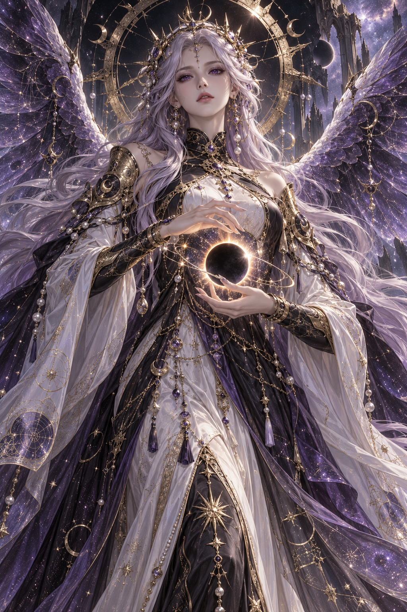UR · 终焉星神阿斯忒拉手中星核缓慢自转，目光轻轻落向星核后回到观众；长发和衣袖有不同延迟的漂动，远景星尘缓行。eclipse/assets/videos/astra.mp4展开完整生成提示词以输入立绘为唯一角色身份与构图参考，制作精美写实幻想角色的自然待机动画。保持原画的脸、年龄、服饰、道具、画风、背景和人物比例，不新增人物或肢体。固定镜头，无推拉、无平移、无切镜。真实连续运动，不使用整张图片缩放、平移或橡皮拉伸假装人物动作。面部、双手和刚性装备保持结构稳定；眨眼自然且不频繁；衣料与头发具有重量和运动延迟。5～6 秒，24～30 fps，竖版 2:3，建议 720×1080 或 1024×1536，无配音与音乐。结尾回到与开头接近的姿态、光照和构图，适合无缝循环。无新增文字、水印、镜头抖动、闪屏和突然变脸。 角色：终焉星神·阿斯忒拉。 动作设计：手中星核缓慢自转，目光轻轻落向星核后回到观众；长发和衣袖有不同延迟的漂动，远景星尘缓行。
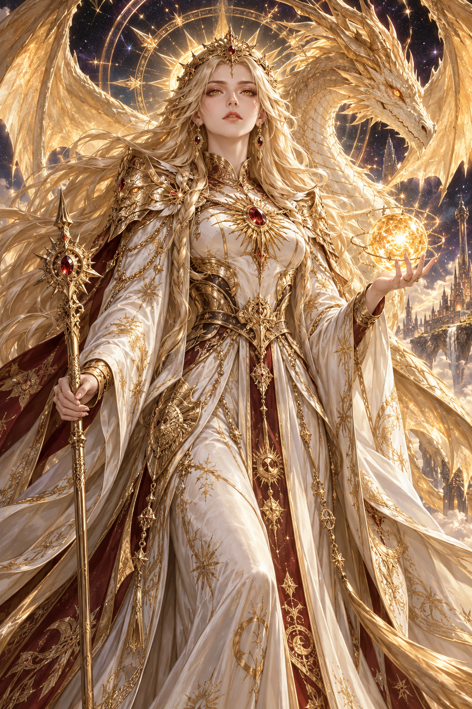UR · 曜龙女帝奥蕾莉娅保持女帝的沉稳姿态，轻微抬起下颌；发梢与披风迎风舒展，金色龙辉沿铠饰流动，权杖保持刚性。eclipse/assets/videos/aurelia.mp4展开完整生成提示词以输入立绘为唯一角色身份与构图参考，制作精美写实幻想角色的自然待机动画。保持原画的脸、年龄、服饰、道具、画风、背景和人物比例，不新增人物或肢体。固定镜头，无推拉、无平移、无切镜。真实连续运动，不使用整张图片缩放、平移或橡皮拉伸假装人物动作。面部、双手和刚性装备保持结构稳定；眨眼自然且不频繁；衣料与头发具有重量和运动延迟。5～6 秒，24～30 fps，竖版 2:3，建议 720×1080 或 1024×1536，无配音与音乐。结尾回到与开头接近的姿态、光照和构图，适合无缝循环。无新增文字、水印、镜头抖动、闪屏和突然变脸。 角色：曜龙女帝·奥蕾莉娅。 动作设计：保持女帝的沉稳姿态，轻微抬起下颌；发梢与披风迎风舒展，金色龙辉沿铠饰流动，权杖保持刚性。
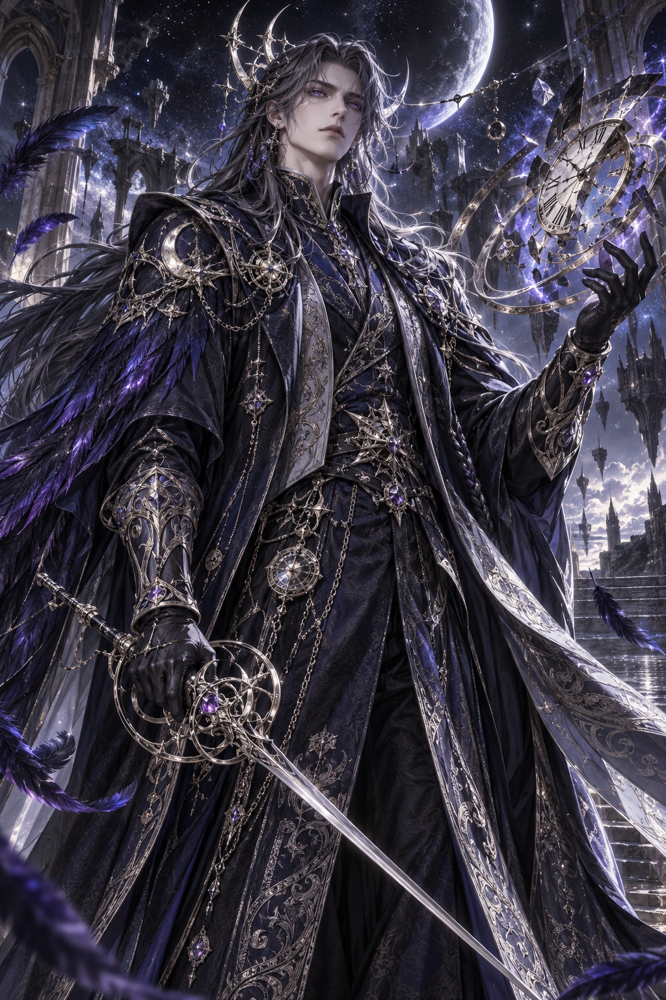UR · 永夜时君诺克提斯目光短暂移向时钟，随后回望；钟环分层缓慢转动，披风滞后摆动，人物动作平静克制。eclipse/assets/videos/noctis.mp4展开完整生成提示词以输入立绘为唯一角色身份与构图参考，制作精美写实幻想角色的自然待机动画。保持原画的脸、年龄、服饰、道具、画风、背景和人物比例，不新增人物或肢体。固定镜头，无推拉、无平移、无切镜。真实连续运动，不使用整张图片缩放、平移或橡皮拉伸假装人物动作。面部、双手和刚性装备保持结构稳定；眨眼自然且不频繁；衣料与头发具有重量和运动延迟。5～6 秒，24～30 fps，竖版 2:3，建议 720×1080 或 1024×1536，无配音与音乐。结尾回到与开头接近的姿态、光照和构图，适合无缝循环。无新增文字、水印、镜头抖动、闪屏和突然变脸。 角色：永夜时君·诺克提斯。 动作设计：目光短暂移向时钟，随后回望；钟环分层缓慢转动，披风滞后摆动，人物动作平静克制。
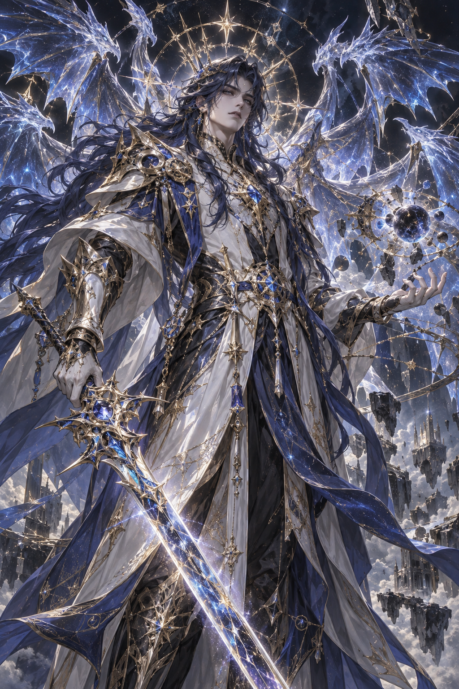UR · 星龙天君苍曜缓慢调整肩部重心，发丝与衣摆随高空风流动；远处星龙光翼舒展一次，保持面部与武器形状稳定。eclipse/assets/videos/caelum.mp4展开完整生成提示词以输入立绘为唯一角色身份与构图参考，制作精美写实幻想角色的自然待机动画。保持原画的脸、年龄、服饰、道具、画风、背景和人物比例，不新增人物或肢体。固定镜头，无推拉、无平移、无切镜。真实连续运动，不使用整张图片缩放、平移或橡皮拉伸假装人物动作。面部、双手和刚性装备保持结构稳定；眨眼自然且不频繁；衣料与头发具有重量和运动延迟。5～6 秒，24～30 fps，竖版 2:3，建议 720×1080 或 1024×1536，无配音与音乐。结尾回到与开头接近的姿态、光照和构图，适合无缝循环。无新增文字、水印、镜头抖动、闪屏和突然变脸。 角色：星龙天君·苍曜。 动作设计：缓慢调整肩部重心，发丝与衣摆随高空风流动；远处星龙光翼舒展一次，保持面部与武器形状稳定。
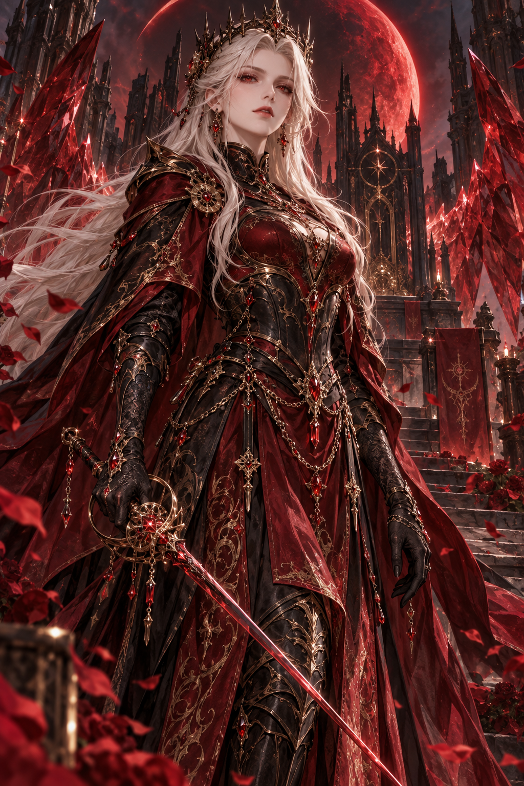SP · 绯月女皇瑟拉菲娜细微侧首后回正，保持冷静威严；长发与裙摆顺着同一阵风先后舒展，蔷薇花瓣缓慢经过，绯月柔和脉动。eclipse/assets/videos/seraphine.mp4展开完整生成提示词以输入立绘为唯一角色身份与构图参考，制作精美写实幻想角色的自然待机动画。保持原画的脸、年龄、服饰、道具、画风、背景和人物比例，不新增人物或肢体。固定镜头，无推拉、无平移、无切镜。真实连续运动，不使用整张图片缩放、平移或橡皮拉伸假装人物动作。面部、双手和刚性装备保持结构稳定；眨眼自然且不频繁；衣料与头发具有重量和运动延迟。5～6 秒，24～30 fps，竖版 2:3，建议 720×1080 或 1024×1536，无配音与音乐。结尾回到与开头接近的姿态、光照和构图，适合无缝循环。无新增文字、水印、镜头抖动、闪屏和突然变脸。 角色：绯月女皇·瑟拉菲娜。 动作设计：细微侧首后回正，保持冷静威严；长发与裙摆顺着同一阵风先后舒展，蔷薇花瓣缓慢经过，绯月柔和脉动。
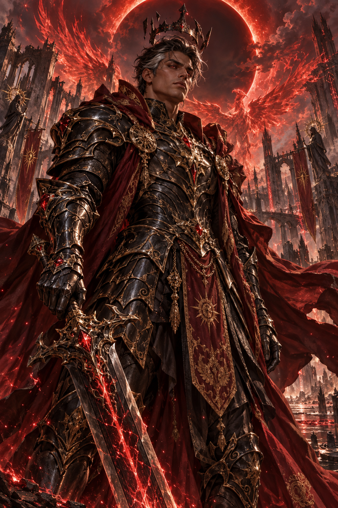SP · 烬日君王拉格纳沉稳调整肩部，目光坚定；重甲和巨剑保持刚性，披风在热流中翻动，剑身余烬和远景火星有方向地上升。eclipse/assets/videos/ragnar.mp4展开完整生成提示词以输入立绘为唯一角色身份与构图参考，制作精美写实幻想角色的自然待机动画。保持原画的脸、年龄、服饰、道具、画风、背景和人物比例，不新增人物或肢体。固定镜头，无推拉、无平移、无切镜。真实连续运动，不使用整张图片缩放、平移或橡皮拉伸假装人物动作。面部、双手和刚性装备保持结构稳定；眨眼自然且不频繁；衣料与头发具有重量和运动延迟。5～6 秒，24～30 fps，竖版 2:3，建议 720×1080 或 1024×1536，无配音与音乐。结尾回到与开头接近的姿态、光照和构图，适合无缝循环。无新增文字、水印、镜头抖动、闪屏和突然变脸。 角色：烬日君王·拉格纳。 动作设计：沉稳调整肩部，目光坚定；重甲和巨剑保持刚性，披风在热流中翻动，剑身余烬和远景火星有方向地上升。
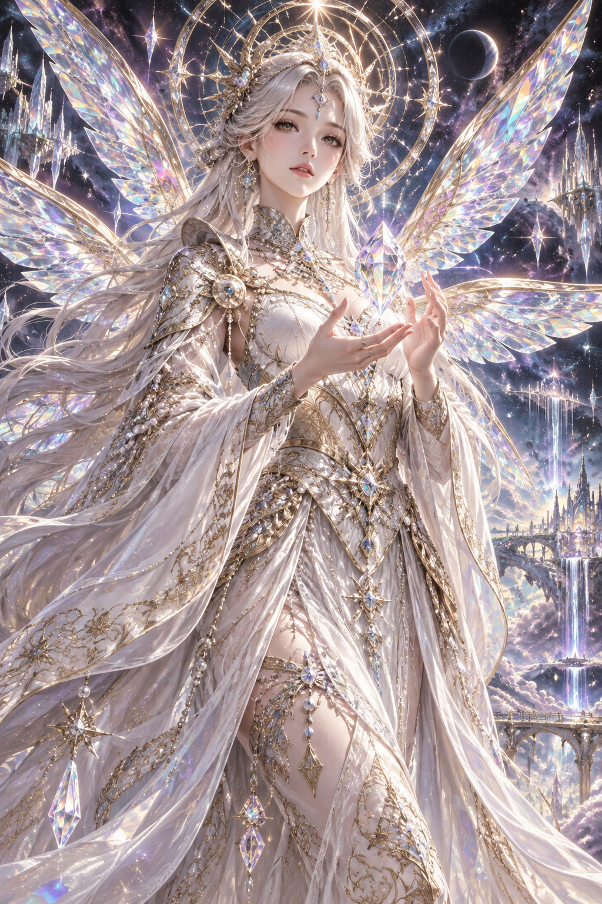SSP · 万象初光伊璃希娅自然眨眼，温柔目光随手边初光移动再回正；长发和轻纱柔顺飘动，光轮缓慢转动，炫光连续变化但不过曝。eclipse/assets/videos/elysium.mp4展开完整生成提示词以输入立绘为唯一角色身份与构图参考，制作精美写实幻想角色的自然待机动画。保持原画的脸、年龄、服饰、道具、画风、背景和人物比例，不新增人物或肢体。固定镜头，无推拉、无平移、无切镜。真实连续运动，不使用整张图片缩放、平移或橡皮拉伸假装人物动作。面部、双手和刚性装备保持结构稳定；眨眼自然且不频繁；衣料与头发具有重量和运动延迟。5～6 秒，24～30 fps，竖版 2:3，建议 720×1080 或 1024×1536，无配音与音乐。结尾回到与开头接近的姿态、光照和构图，适合无缝循环。无新增文字、水印、镜头抖动、闪屏和突然变脸。 角色：万象初光·伊璃希娅。 动作设计：自然眨眼，温柔目光随手边初光移动再回正；长发和轻纱柔顺飘动，光轮缓慢转动，炫光连续变化但不过曝。
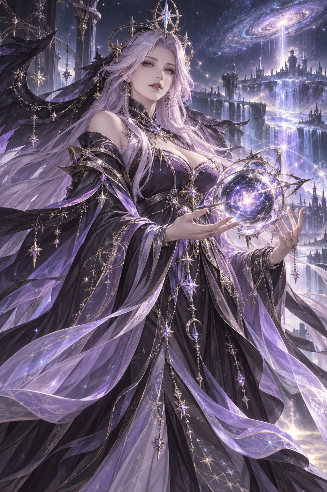UR · 织女星君维加视线沿星线移动，手腕作一次极小幅度牵引后归位；发丝、袖口与星线依次响应，星光沿丝线流转。eclipse/assets/videos/vega.mp4展开完整生成提示词以输入立绘为唯一角色身份与构图参考，制作精美写实幻想角色的自然待机动画。保持原画的脸、年龄、服饰、道具、画风、背景和人物比例，不新增人物或肢体。固定镜头，无推拉、无平移、无切镜。真实连续运动，不使用整张图片缩放、平移或橡皮拉伸假装人物动作。面部、双手和刚性装备保持结构稳定；眨眼自然且不频繁；衣料与头发具有重量和运动延迟。5～6 秒，24～30 fps，竖版 2:3，建议 720×1080 或 1024×1536，无配音与音乐。结尾回到与开头接近的姿态、光照和构图，适合无缝循环。无新增文字、水印、镜头抖动、闪屏和突然变脸。 角色：织女星君·维加。 动作设计：视线沿星线移动，手腕作一次极小幅度牵引后归位；发丝、袖口与星线依次响应，星光沿丝线流转。
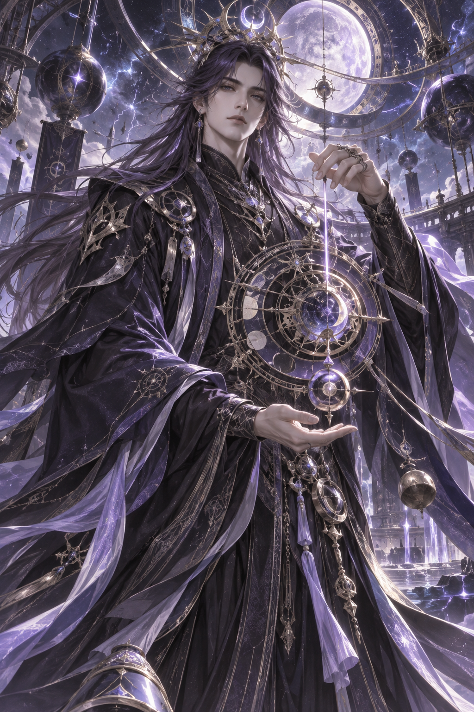UR · 雷枢星君阿斯特鲁沉稳转动目光，握持姿态不变；发梢与披风被微风带起，远景雷光柔和明灭，避免照白整张脸。eclipse/assets/videos/astreus.mp4展开完整生成提示词以输入立绘为唯一角色身份与构图参考，制作精美写实幻想角色的自然待机动画。保持原画的脸、年龄、服饰、道具、画风、背景和人物比例，不新增人物或肢体。固定镜头，无推拉、无平移、无切镜。真实连续运动，不使用整张图片缩放、平移或橡皮拉伸假装人物动作。面部、双手和刚性装备保持结构稳定；眨眼自然且不频繁；衣料与头发具有重量和运动延迟。5～6 秒，24～30 fps，竖版 2:3，建议 720×1080 或 1024×1536，无配音与音乐。结尾回到与开头接近的姿态、光照和构图，适合无缝循环。无新增文字、水印、镜头抖动、闪屏和突然变脸。 角色：雷枢星君·阿斯特鲁。 动作设计：沉稳转动目光，握持姿态不变；发梢与披风被微风带起，远景雷光柔和明灭，避免照白整张脸。
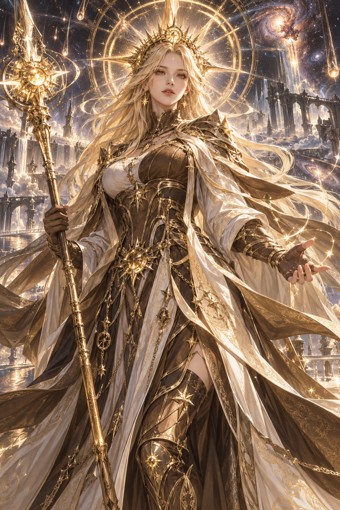UR · 曜辉星君索拉拉轻轻抬眼，重心缓慢回正；金色长发和衣摆分别摆动，曜辉在身后扩散再收拢，保持柔和光照。eclipse/assets/videos/solara.mp4展开完整生成提示词以输入立绘为唯一角色身份与构图参考，制作精美写实幻想角色的自然待机动画。保持原画的脸、年龄、服饰、道具、画风、背景和人物比例，不新增人物或肢体。固定镜头，无推拉、无平移、无切镜。真实连续运动，不使用整张图片缩放、平移或橡皮拉伸假装人物动作。面部、双手和刚性装备保持结构稳定；眨眼自然且不频繁；衣料与头发具有重量和运动延迟。5～6 秒，24～30 fps，竖版 2:3，建议 720×1080 或 1024×1536，无配音与音乐。结尾回到与开头接近的姿态、光照和构图，适合无缝循环。无新增文字、水印、镜头抖动、闪屏和突然变脸。 角色：曜辉星君·索拉拉。 动作设计：轻轻抬眼，重心缓慢回正；金色长发和衣摆分别摆动，曜辉在身后扩散再收拢，保持柔和光照。
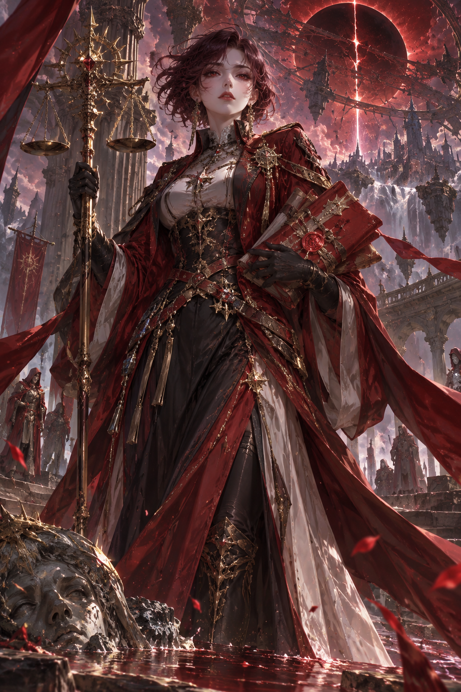SP · 赤契执衡维蕾雅✓ 已接入用户视频 · 播放视频轻微低头看向契约后回望，肩部平稳；红色外套下摆与纸页边缘轻轻摆动，天平权杖保持刚性，封印微光有节奏流动。eclipse/assets/videos/valeria.mp4展开完整生成提示词以输入立绘为唯一角色身份与构图参考，制作精美写实幻想角色的自然待机动画。保持原画的脸、年龄、服饰、道具、画风、背景和人物比例，不新增人物或肢体。固定镜头，无推拉、无平移、无切镜。真实连续运动，不使用整张图片缩放、平移或橡皮拉伸假装人物动作。面部、双手和刚性装备保持结构稳定；眨眼自然且不频繁；衣料与头发具有重量和运动延迟。5～6 秒，24～30 fps，竖版 2:3，建议 720×1080 或 1024×1536，无配音与音乐。结尾回到与开头接近的姿态、光照和构图，适合无缝循环。无新增文字、水印、镜头抖动、闪屏和突然变脸。 角色：赤契执衡·维蕾雅。 动作设计：轻微低头看向契约后回望，肩部平稳；红色外套下摆与纸页边缘轻轻摆动，天平权杖保持刚性，封印微光有节奏流动。
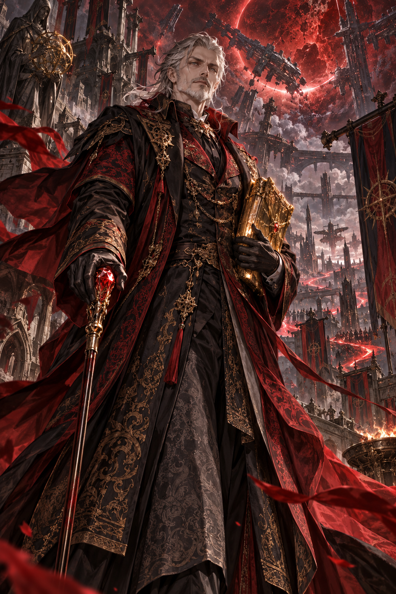SP · 烬金债主塞维林细微抬起下颌，露出克制的审视神情；银发发梢与长外套缓慢摆动，金色账册边缘掠过一道光，手杖与手指保持稳定。eclipse/assets/videos/severin.mp4展开完整生成提示词以输入立绘为唯一角色身份与构图参考，制作精美写实幻想角色的自然待机动画。保持原画的脸、年龄、服饰、道具、画风、背景和人物比例，不新增人物或肢体。固定镜头，无推拉、无平移、无切镜。真实连续运动，不使用整张图片缩放、平移或橡皮拉伸假装人物动作。面部、双手和刚性装备保持结构稳定；眨眼自然且不频繁；衣料与头发具有重量和运动延迟。5～6 秒，24～30 fps，竖版 2:3，建议 720×1080 或 1024×1536，无配音与音乐。结尾回到与开头接近的姿态、光照和构图，适合无缝循环。无新增文字、水印、镜头抖动、闪屏和突然变脸。 角色：烬金债主·塞维林。 动作设计：细微抬起下颌，露出克制的审视神情；银发发梢与长外套缓慢摆动，金色账册边缘掠过一道光，手杖与手指保持稳定。
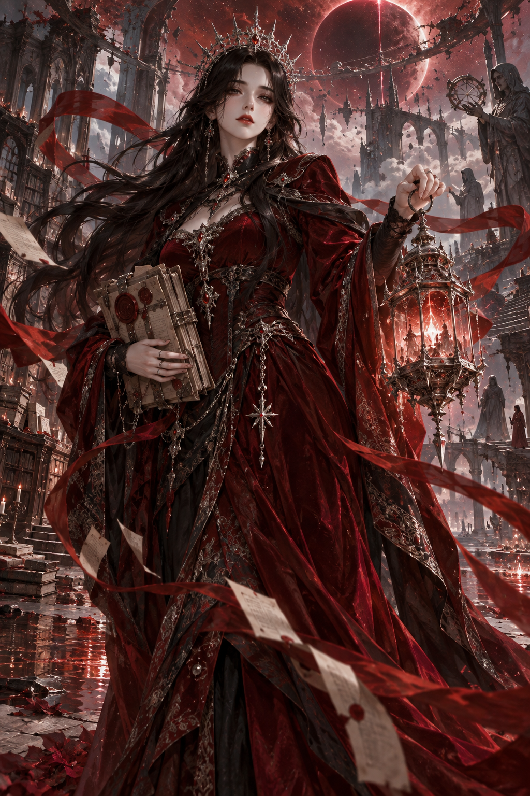SP · 归名女爵莫薇恩目光先掠向提灯再回到观众；黑色长发、纱袖与裙摆层次分明地流动，灯火轻轻摇曳，背景花瓣缓行。eclipse/assets/videos/morwen.mp4展开完整生成提示词以输入立绘为唯一角色身份与构图参考，制作精美写实幻想角色的自然待机动画。保持原画的脸、年龄、服饰、道具、画风、背景和人物比例，不新增人物或肢体。固定镜头，无推拉、无平移、无切镜。真实连续运动，不使用整张图片缩放、平移或橡皮拉伸假装人物动作。面部、双手和刚性装备保持结构稳定；眨眼自然且不频繁；衣料与头发具有重量和运动延迟。5～6 秒，24～30 fps，竖版 2:3，建议 720×1080 或 1024×1536，无配音与音乐。结尾回到与开头接近的姿态、光照和构图，适合无缝循环。无新增文字、水印、镜头抖动、闪屏和突然变脸。 角色：归名女爵·莫薇恩。 动作设计：目光先掠向提灯再回到观众；黑色长发、纱袖与裙摆层次分明地流动，灯火轻轻摇曳，背景花瓣缓行。
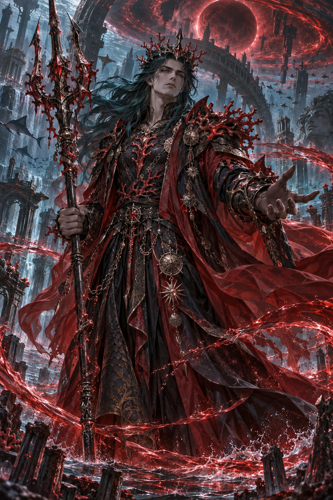SP · 深潮王侯塔洛尔稳稳握持三叉戟，轻微侧首后回正；海风推动头发和披风，珊瑚护甲保持刚性，红色潮光在远景起伏。eclipse/assets/videos/thalor.mp4展开完整生成提示词以输入立绘为唯一角色身份与构图参考，制作精美写实幻想角色的自然待机动画。保持原画的脸、年龄、服饰、道具、画风、背景和人物比例，不新增人物或肢体。固定镜头，无推拉、无平移、无切镜。真实连续运动，不使用整张图片缩放、平移或橡皮拉伸假装人物动作。面部、双手和刚性装备保持结构稳定；眨眼自然且不频繁；衣料与头发具有重量和运动延迟。5～6 秒，24～30 fps，竖版 2:3，建议 720×1080 或 1024×1536，无配音与音乐。结尾回到与开头接近的姿态、光照和构图，适合无缝循环。无新增文字、水印、镜头抖动、闪屏和突然变脸。 角色：深潮王侯·塔洛尔。 动作设计：稳稳握持三叉戟，轻微侧首后回正；海风推动头发和披风，珊瑚护甲保持刚性，红色潮光在远景起伏。
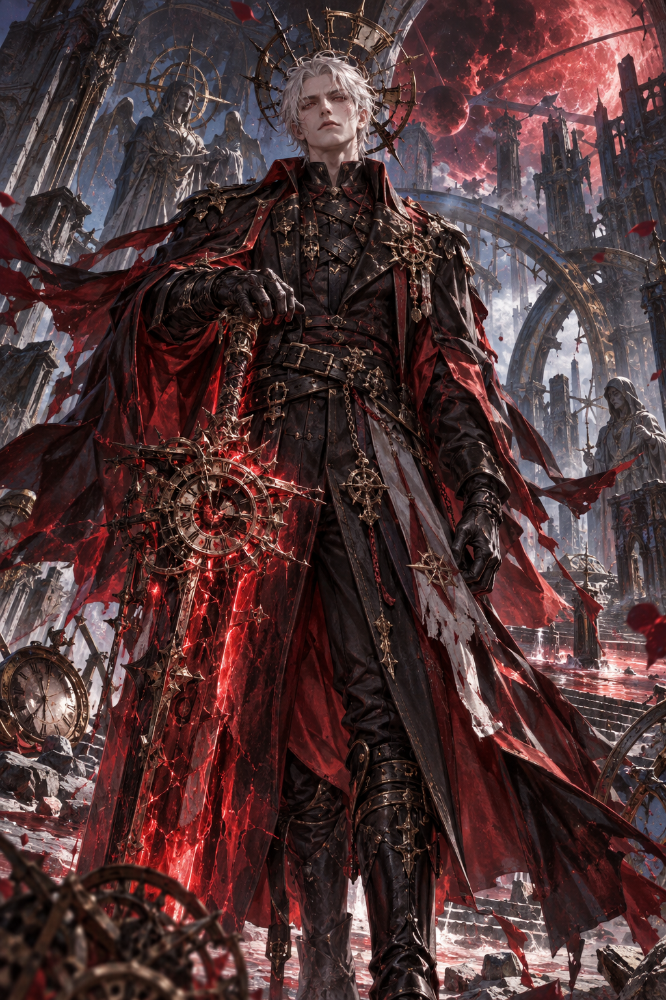SP · 断钟行刑艾沃尔目光缓慢扫过前方，白色发梢与红色衣摆随风摆动；钟盘指针渐进移动，剑刃与握剑手保持形状稳定。eclipse/assets/videos/aevor.mp4展开完整生成提示词以输入立绘为唯一角色身份与构图参考，制作精美写实幻想角色的自然待机动画。保持原画的脸、年龄、服饰、道具、画风、背景和人物比例，不新增人物或肢体。固定镜头，无推拉、无平移、无切镜。真实连续运动，不使用整张图片缩放、平移或橡皮拉伸假装人物动作。面部、双手和刚性装备保持结构稳定；眨眼自然且不频繁；衣料与头发具有重量和运动延迟。5～6 秒，24～30 fps，竖版 2:3，建议 720×1080 或 1024×1536，无配音与音乐。结尾回到与开头接近的姿态、光照和构图，适合无缝循环。无新增文字、水印、镜头抖动、闪屏和突然变脸。 角色：断钟行刑·艾沃尔。 动作设计：目光缓慢扫过前方，白色发梢与红色衣摆随风摆动；钟盘指针渐进移动，剑刃与握剑手保持形状稳定。
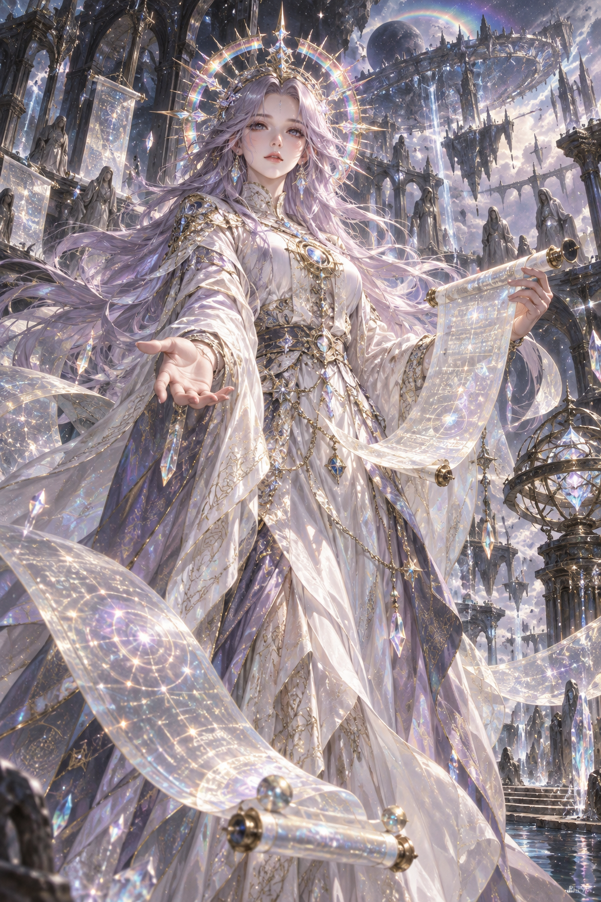SSP · 万名见证阿纳弥斯目光轻轻移向卷轴再回望；卷轴保持主体形状，边缘微微拂动，银紫长发和薄纱延迟摆动，星文字微光缓慢流过。eclipse/assets/videos/anamnesis.mp4展开完整生成提示词以输入立绘为唯一角色身份与构图参考，制作精美写实幻想角色的自然待机动画。保持原画的脸、年龄、服饰、道具、画风、背景和人物比例，不新增人物或肢体。固定镜头，无推拉、无平移、无切镜。真实连续运动，不使用整张图片缩放、平移或橡皮拉伸假装人物动作。面部、双手和刚性装备保持结构稳定；眨眼自然且不频繁；衣料与头发具有重量和运动延迟。5～6 秒，24～30 fps，竖版 2:3，建议 720×1080 或 1024×1536，无配音与音乐。结尾回到与开头接近的姿态、光照和构图，适合无缝循环。无新增文字、水印、镜头抖动、闪屏和突然变脸。 角色：万名见证·阿纳弥斯。 动作设计：目光轻轻移向卷轴再回望；卷轴保持主体形状，边缘微微拂动，银紫长发和薄纱延迟摆动，星文字微光缓慢流过。
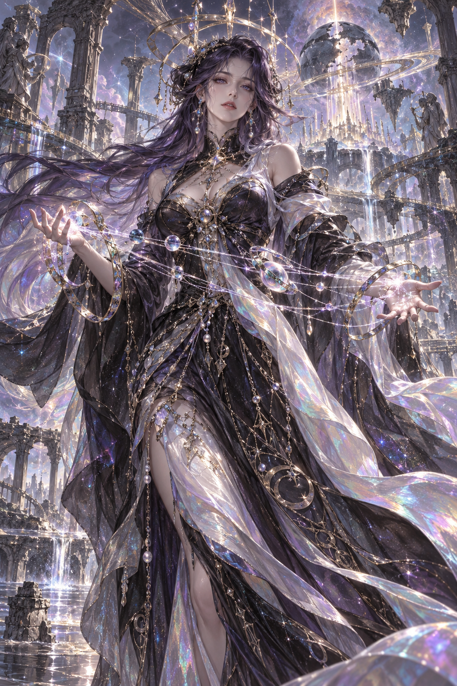SSP · 因果织母卡乌莎手腕小幅牵引因果光线后回到原姿态；紫色长发和衣袖延迟跟随，棱彩沿丝线连续流动，背景星环缓慢旋转。eclipse/assets/videos/causalia.mp4展开完整生成提示词以输入立绘为唯一角色身份与构图参考，制作精美写实幻想角色的自然待机动画。保持原画的脸、年龄、服饰、道具、画风、背景和人物比例，不新增人物或肢体。固定镜头，无推拉、无平移、无切镜。真实连续运动，不使用整张图片缩放、平移或橡皮拉伸假装人物动作。面部、双手和刚性装备保持结构稳定；眨眼自然且不频繁；衣料与头发具有重量和运动延迟。5～6 秒，24～30 fps，竖版 2:3，建议 720×1080 或 1024×1536，无配音与音乐。结尾回到与开头接近的姿态、光照和构图，适合无缝循环。无新增文字、水印、镜头抖动、闪屏和突然变脸。 角色：因果织母·卡乌莎。 动作设计：手腕小幅牵引因果光线后回到原姿态；紫色长发和衣袖延迟跟随，棱彩沿丝线连续流动，背景星环缓慢旋转。
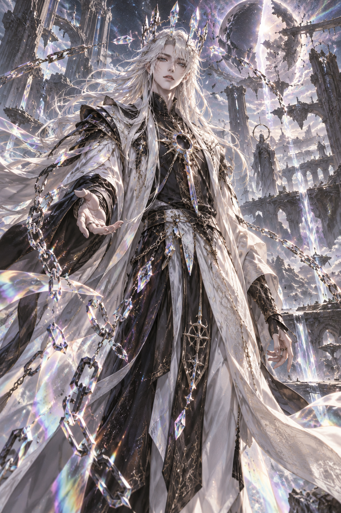SSP · 无界初约零谕平静回望，轻微调整肩部；象牙白长发和衣袍柔顺漂动，断开的锁链分段轻轻摆动，炫光缓慢流转，保持每节链条连贯。eclipse/assets/videos/nullion.mp4展开完整生成提示词以输入立绘为唯一角色身份与构图参考，制作精美写实幻想角色的自然待机动画。保持原画的脸、年龄、服饰、道具、画风、背景和人物比例，不新增人物或肢体。固定镜头，无推拉、无平移、无切镜。真实连续运动，不使用整张图片缩放、平移或橡皮拉伸假装人物动作。面部、双手和刚性装备保持结构稳定；眨眼自然且不频繁；衣料与头发具有重量和运动延迟。5～6 秒，24～30 fps，竖版 2:3，建议 720×1080 或 1024×1536，无配音与音乐。结尾回到与开头接近的姿态、光照和构图，适合无缝循环。无新增文字、水印、镜头抖动、闪屏和突然变脸。 角色：无界初约·零谕。 动作设计：平静回望，轻微调整肩部；象牙白长发和衣袍柔顺漂动，断开的锁链分段轻轻摆动，炫光缓慢流转，保持每节链条连贯。